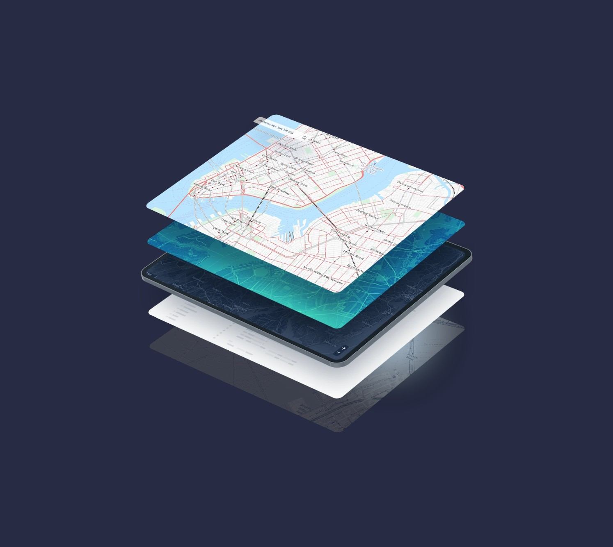

hey I'm Adeel
a pm working in data center infra
Data Center Infra Analytics
LandGate

User Journey Optimization
Neu Money

Payment Gateway System
STVDIO
Projects

RentLens
Interactive map for rental pricing insights
Pathos
LLM powered news sentiment engine
Contact